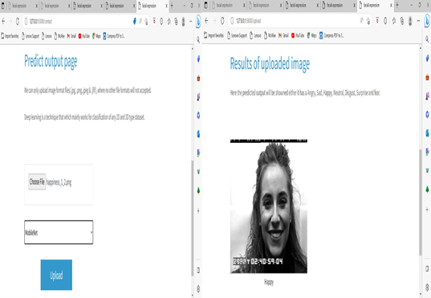
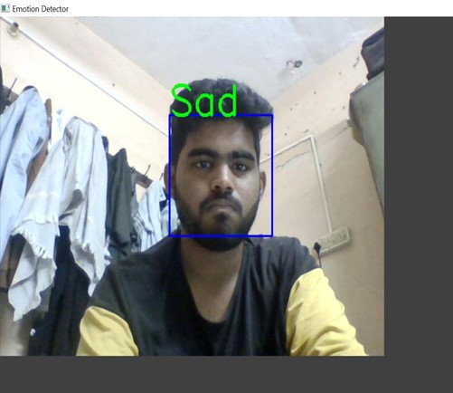
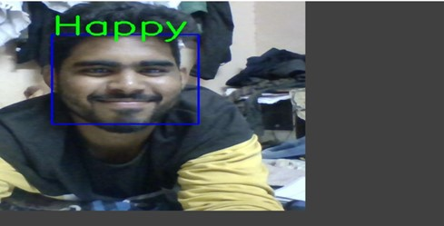

The results and discussion for real-time facial expression recognition using CNN depend on the specific dataset, architecture, hyperparameters, and evaluation metrics used in the experiment. Here are some possible results and discussion points:
1.Dataset: The choice of dataset affects the performance of the facial expression recognition system. Common datasets include FER2013, CK+, and JAFFE. The system's accuracy and generalization ability can be evaluated using metrics such as precision, recall, F1 score, and confusion matrix.
2.CNN architecture: The architecture of the CNN model affects the accuracy, computational efficiency, and real-time performance of the system. Popular architectures include VGGNet, ResNet, and Inception. The number of layers, filter size, and pooling strategies can be tuned to optimize the performance.
3.Hyperparameters: The hyperparameters of the CNN model affect the training process and performance of the system. The learning rate, batch size, and regularization strength can be tuned using techniques such as grid search or random search.
4.Real-time performance: The real-time performance of the facial expression recognition system is a critical factor for practical applications. The latency, frames per second, and memory usage can be evaluated to determine the system's efficiency and feasibility.
5.Discussion: The discussion of the results should address the strengths, limitations, and potential future directions of the facial expression recognition system. The system's accuracy, real-time performance, and generalization ability can be compared with other state-of-the-art methods. The limitations of the dataset, architecture, and hyperparameters should be acknowledged. Potential future directions include improving the accuracy and efficiency of the system, expanding the dataset to include more diverse facial expressions and conditions, and exploring the use of other deep learning models such as recurrent neural networks and attention mechanisms.
| S.No | Test Cases | I/O | Expected O/T | Actual O/T | Pass/Fail |
|---|---|---|---|---|---|
| 1 | Read the dataset | Dataset path | Dataset need to read successfully | Dataset fetched successfully | Pass |
| 2 | Performing pre- processing on the dataset | Pre- processing part takes place | Pre- processing should be performed on dataset | Pre-processing successfully completed. | Pass |
| 3 | Model Building | Model Building for the clean data | Need to create model using required algorithms | Model Created Successfully | Pass |
| 4 | Face recognition | Video streaming or image upload | Face recognized successfully | Model recognize the face image successfully | Pass |
Test Case Model Building
In general, the results and discussion for real-time facial expression recognition using CNN should demonstrate the effectiveness and feasibility of the system for practical applications. The system should achieve high accuracy, real-time performance, and generalization ability while addressing the limitations and potential future directions of the field. In this Project, By using Pycharm we developed the code for the Real-Time Facial Expression Recognition using CNN successfully.We developed a web page to upload images and Live prediction by using Flask Application. Finally we successfully predicted the images and Live prediction including audio by using Mobilenet Model, RestNet50 And VGG16 Model. In this Proposed system we are getting 85% accuracy for image based and live prediction.
Source Code
Result of Image
Result of Live Prediction 1
Result of Live Prediction 2